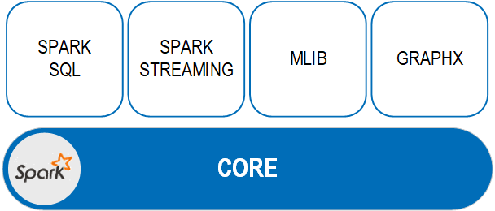

Apache Spark is a cluster computing technology that was designed for fast computation, and is one of the key big data distributed processing frameworks in use today. It can efficiently handle a wide range of workloads including batch applications, iterative algorithms, interactive queries and streaming.
Apache Spark consists of Spark Core and a set of libraries. The core is the distributed execution engine and the Java, Scala, and Python APIs offer a platform for distributed ETL application development. The following libraries, built on top of the core, provide the means to implement a wide array of workloads for streaming, SQL, and machine learning.
Spark SQL
Spark Streaming
MLlib (machine learning)
GraphX

Applications based on the
The Spark SQL library is the module that is designed to work with structured data. The Spark SQL interfaces provide Spark with information about the structure of both the data and the computation being performed. Internally, Spark SQL uses this information to perform additional optimizations. You can use SQL queries or the DataFrame API alone or in combination. When computing a result the same execution engine is used, independent of which API/language you are using to express the computation. This unification means that developers can switch between different APIs based on the one that provides the most natural way to express a given transformation.
You can also connect to business intelligence tools using industry-standard JDBC-ODBC bridges to provide data visualization for easier analysis.
Spark Streaming enables scalable, high-throughput, fault-tolerant stream processing of live data streams. Data can be ingested from multiple sources, and can be processed using complex algorithms expressed with high-level functions like map, reduce, join and window. Additionally, processed data can be pushed out to file systems, databases, and live dashboards. This library can be used in conjunction with Spark’s machine learning and graph processing algorithms on data streams.
The Spark Machine Learning library supports practical machine learning with common learning algorithms like classification, regression, and clustering. It also includes tools like feature extraction and transformation, utilities for statistics and data handling, and provides data persistence.
GraphX is the Spark component used for graphs and graph-parallel computation, unifying ETL, exploratory analysis, and iterative graph computation in a single library. To support graph computation, GraphX exposes a set of fundamental operators (such as subgraph, joinVertices, and aggregateMessages) and an optimized variant of the Pregel API. In addition, GraphX includes a growing collection of graph algorithms and builders to simplify graph analytics tasks.
GraphX also provides performance that is comparable with the fastest graph systems without compromising on flexibility, fault tolerance, or ease of use.
Apache Zeppelin is an open-source data analytics and visualization platform that allows you to perform interactive analytics on a web browser. The Apache Zeppelin web notebook is integrated with Apache Spark and enables building data-driven, interactive documents with SQL, Scala, or Python. It comes with an interactive interface that allows you to immediately see the results of your analytics; you can execute Spark code and view the results in table or graph form.
For instructions on working with the